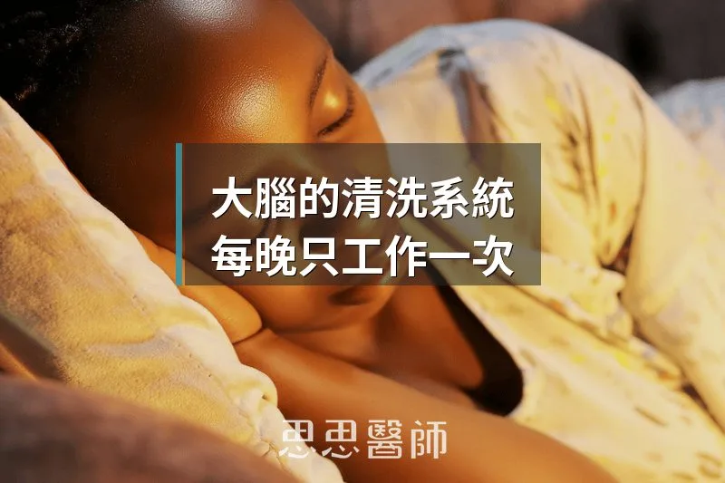
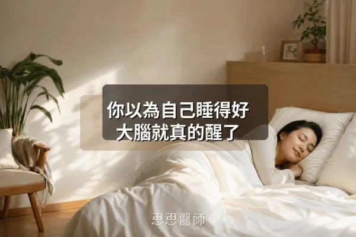

大腦的清洗系統，每晚只工作一次

你的大腦每天都在高速運轉。思考、判斷、記憶、情緒，幾乎沒有停下來的時候。但高速運轉的代價，是會產生大量代謝廢物。
其中兩種你可能聽過：類澱粉蛋白（Amyloid beta）和濤蛋白（Tau protein）。這兩種蛋白質在腦細胞之間堆積，是目前科學界對阿茲海默症研究最核心的焦點。問題不只是它們「出現在腦子裡」，而是它們如果沒有被清掉，就會慢慢沉積，慢慢傷害周圍的神經元，慢慢讓大腦的功能退化。
那大腦怎麼清理這些廢物？
身體其他部位有淋巴系統負責清運代謝廢物，但很長一段時間，科學家都以為大腦是個例外，因為傳統認知裡，大腦沒有淋巴管。直到 2013 年，一切改變了。
大腦其實有自己的清洗系統
2013 年，丹麥神經科學家 Maiken Nedergaard 在《Science》期刊發表了一篇劃時代的研究。她的團隊發現，大腦有一套以前從未被完整描述過的清洗機制，她把它命名為膠質淋巴系統（Glymphatic System）。
運作原理是這樣的：腦脊液（Cerebrospinal Fluid，CSF）會沿著腦部血管外側的通道流動，把代謝廢物從神經組織間隙沖出去，再透過靜脈旁的通道排出大腦。這套系統的運輸主角，是腦部的星形膠質細胞（Astrocyte）上面的AQP4 水通道蛋白，它控制著腦脊液進出組織的速度。
這個發現意義重大，因為它解釋了一個長久以來的謎：為什麼大腦能在沒有傳統淋巴管的情況下，仍然有辦法清除自身產生的廢物。
為什麼非睡不可：深睡期間才是清洗時段
膠質淋巴系統有一個關鍵特性：它主要在睡眠期間才大幅啟動，清醒狀態下的效率大概只有睡眠時的一小部分。
在深度睡眠，也就是睡眠分期中的 NREM N3 階段（慢波睡眠），腦細胞會主動縮小，讓神經元之間的間質空間（Interstitial Space）擴大將近 60%。你可以把這想像成：白天的大腦像是地下室塞滿了東西，走道很窄；到了深夜深睡的時候，東西被推到旁邊，走道突然變寬了，清潔車才能順暢進入、把廢物推出去。
就是這個空間的擴大，讓腦脊液的流量大幅增加，廢物清除效率才能顯著提升。這也是為什麼睡眠不只是「休息」，而是大腦每天必做的維護工程。
睡不夠，廢物就堆在那裡
睡眠不足的後果，不只是隔天精神差。2025 年發表於《Frontiers in Neurology》的回顧研究（PMID: 39974364）整理了膠質淋巴系統在多種神經系統疾病中的角色，結論很清楚：長期睡眠不足會導致 Amyloid beta 和 Tau 蛋白在腦中加速堆積，這正是阿茲海默症的病理核心之一。
動物實驗數據顯示，剝奪睡眠只要一個晚上，腦脊液流量就會下降，廢物清除效率跟著降低。長期下來，這些廢物慢慢沉積，形成斑塊，開始干擾神經傳導，失智風險就這樣一點一點地累積起來。
我在門診常遇到一種狀況：病人說「我睡六小時很夠了，我習慣了」。但習慣了，不代表大腦習慣了。廢物還是在堆，只是你感覺不到而已。
連睡姿都有差：側臥比仰臥效率更高
這個細節很多人不知道：睡姿也會影響膠質淋巴系統的清洗效率。
研究發現，側臥姿勢（不論左側或右側）在膠質淋巴系統清除廢物的效率上，優於仰臥和俯臥。原因和膠質淋巴通道的解剖走向有關，側臥時，腦脊液在血管周圍通道的流動路徑更順暢，廢物更容易被帶走。大多數哺乳類動物睡覺的時候都偏側臥，這可能不是偶然。
當然，睡姿不是你能完全控制的事，睡著了就翻來翻去。但如果你有習慣性的睡姿選擇，側臥是目前研究支持相對有利的姿勢。
哪些習慣正在干擾你的深睡
膠質淋巴系統要好好運作，前提是你能進入並維持足夠的深度睡眠。但有幾件事是對深睡品質傷害最大的，我先點出兩個最常見的。
第一個是酒精。很多人以為喝酒助眠，但這是一個很常見的誤解。酒精確實能讓你更快入睡，但它會嚴重壓縮 NREM 深睡和 REM 睡眠的比例，讓你的睡眠架構整個走樣。你睡了八小時，但深睡可能只剩下一點點，膠質淋巴系統幾乎沒有機會好好運作。你隔天覺得「沒睡飽」，不是錯覺。
第二個是睡前使用 3C 螢幕。藍光抑制褪黑激素分泌，延後入睡，縮短整體睡眠時間。更重要的是，睡前持續接收刺激性的資訊（社群媒體、新聞、短影片），讓大腦皮質在你躺下後很久都還在運轉，難以進入深睡狀態。
你現在可以做的事
膠質淋巴系統不是你能用補充品「補起來」的東西，它需要的是充足且有品質的睡眠。
1. 睡足 7 到 9 小時。這不是建議，這是大腦維護的最低需求。低於七小時，膠質淋巴系統沒有足夠的深睡時間完成清洗工作。
2. 盡量側臥入睡。如果你沒有特定的側臥障礙（如肩膀疼痛），可以試著從側臥開始入睡。
3. 睡前至少一小時不喝酒。如果你有喝酒的習慣，離睡覺越近的飲酒對睡眠品質傷害越大。
4. 睡前 30 到 60 分鐘放下手機和平板。你的大腦需要時間從高刺激狀態切換到睡眠模式。
5. 固定作息，週末不要暴睡補眠。生理時鐘的穩定性，直接影響深睡在整晚睡眠中出現的時機和比例。
大腦的清洗系統，每天晚上只工作一次。你讓它好好工作，它就幫你把今天積累的廢物清乾淨，明天的腦袋才能清晰地繼續運轉。這件事沒有捷徑，但也不難：好好睡覺，就是你能給大腦最直接的保護。
 空腹小雞跟思思醫師一起斷食，順便養一隻小雞來養小雞 →
空腹小雞跟思思醫師一起斷食，順便養一隻小雞來養小雞 →
好朋友週信
每週五一封：《健康駭客週報》這集的研究重點，加上家醫專欄這週的新文章。免費，隨時可以退訂。
延伸閱讀

你以為自己睡得好，大腦就真的醒了
被告知睡眠品質差的受試者認知測驗表現明顯下降與實際睡眠無關，安慰劑效應或古典制約影響大腦表現，相信睡眠充足本身成為睡眠品質的一部分。

不要太努力，一天只要專注 4 小時
研究指出人一天能維持高品質專注的時間約四小時，短暫休息無法完全恢復，把腦力工作放在早上並顧好睡眠更重要。

磨牙不是牙齒的問題
磨牙由腦幹控制非咬肌自主，與慢性壓力升高皮質醇、神經傳導失衡、鎂缺乏或睡眠呼吸中止症有關，需從根源改善。